| Lage des Ortes: | südöstlich von Freudenthal (Bruntál). |
| Bezirk: | Freudenthal (Bruntál) |
| Herrschaft: | Karlsberg (Karlovec) |
| Forstamt: | Karlsberg (Karlovec) |
| Forstrevier: | Heidenpiltsch (Bílčice) |
| Evidenznummer: | 073 |
| Abmessungen: | nicht festgestellt |
Beschreibung:
Rechteckige Tafel in einem aus nicht bearbeiteten Steinen gemauerten Denkmal.
Der Gedenkstein trägt folgende deutsche Inschrift:
„FÜRST JOHANN EICHEN gepflanzt im Frühjahre 1898 zum 40 JÄHRIGEN REGIERUNGS: JUBILÄUM“Weiter folgt der Text aus dem Jahr 1908:
„L jähr. Reg. Jubil. MCMVIII“Bei der letzten Renovierung wurde die Inschrift auf dem Denkmal schwarz hervorgehoben. Leider kam es bei dieser Renovierung zu einigen Fehlern: anstatt des Wortes "gepflanzt" wurde "gepflanze" falsch hervorgehoben und die Zahl "10" anstatt "40".
5. 11. 2016 - Die Fotografien hat Herr Václav Müller geschickt.
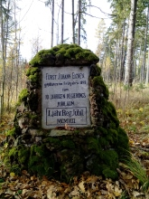
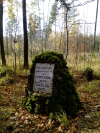
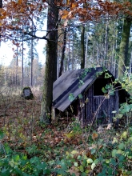

15.11.2012 - Die Fotografien hat Herr Jan Matouš, http://smirci-krize.cz geschickt.
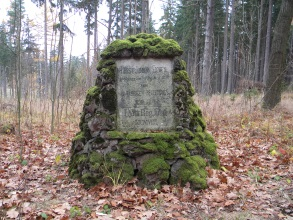
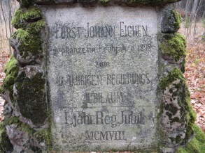
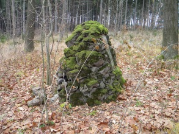
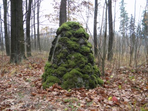
15.6.2011 - Die Fotografien hat Herr Petr Vomáčka geschickt.
 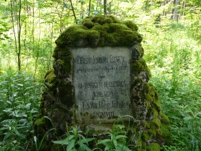
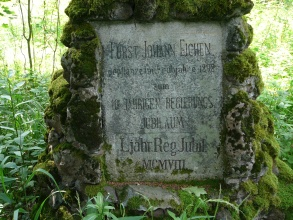
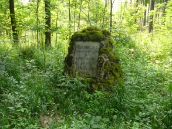
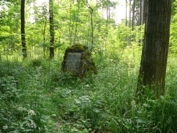
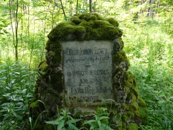
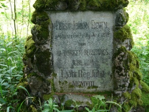
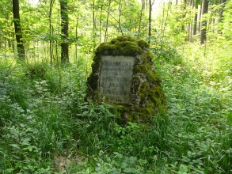
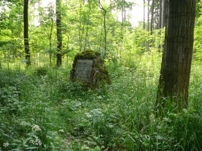
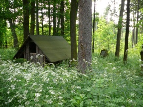
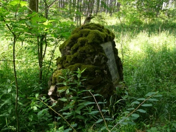
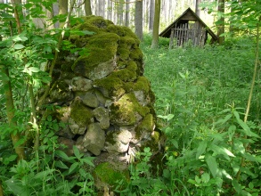
{kind=link}
{kind=link}
{kind=link}
{kind=link}
{kind=link}
{kind=link}
{kind=link}
{kind=link}
{kind=link}
{kind=link}
{kind=link}
{kind=link}
{kind=link}
{kind=link}